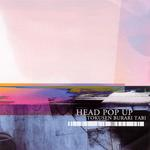

| Artist: | Head Pop Up |
| Title: | Tokusen Burari Tabi |
| Label: | Poseidon Records PRF-002 |
| Length(s): | 65 minutes |
| Year(s) of release: | 2002 |
| Month of review: | [11/2003] |
| 1) | Tokusen Burari Tabi | 13.12 |
| 2) | Metempsychosis | 4.56 |
| 3) | Summer 90 | 7.36 |
| 4) | Soshite | 4.34 |
| 5) | Night In Roppongi | 11.30 |
| 6) | Toscana - Tsuchiyu Spa - Finger Eurythmics - Kuma No Oyako | 22.24 |
Metempsychosis has vocals, surprisingly enough. The vocals are also quite strange, melodic but very fast at times, at other times relaxed. The fast vocals are quite intricate. Since I understand little of Japanese, I consider it to be another instrument. There is something Gentle Giant like about them. The music is quite relatively relaxed, and includes some nice mellotron and organ beneath the meandering guitar.
Summer 90 enjoys a warm opening with its guitar work and keyboards. However, the following repetitive guitar lines are a bit more nervous. The vocoded vocals are something else again. The music is usually quite relaxed, but the vocals add a certain craziness to the song. String like synths continue, to be followed by some jazzy piano playing. The playing is good and the band connects well as usual on albums on Poseidon. The guitar can be a bit rowdy here, flowing into the light piano passage of the opening part again.
Soshite features more scat like vocals, and powerful guitarwork with light percussion towards the end. Before we arrive at the end though, it is not all guitar. The bass has its short space in the sun, the keyboards whirl, but the percussion stays. The scat vocals conclude.
With Night In Roppongi we arrive back at the longer tracks. This one has a percussive piano in its opening making an up-beat affair. The vocals are quite weird again, one could mistake them for a zeuhl band. Plenty of repetitive riffing here, not the most melodic of material. The guitar lines are sometimes very Hackett like, as on his solo records. Then the music dies down a bit and we come to a guitar section where the guitar is transformed in a strange fashion. It burbles. The middle part is straightforward solo guitar and keyboards and although proficient and energetic, rather standard. This similar to the opening track which also featured something akin to a live improvisation/extension in its middle. The dissonant piano at the end is new though.
Finally, Toscana - Tsuchiyu Spa - Finger Eurythmics - Kuma No Oyako is a mile long live track, consisting one would assume of the mentioned four parts. This seems a bit like a bonus track of some kind, the playing is significantly looser and the sound is also not as good. The keyboards are accordeon like and the first few minutes tend to meander without any real direction. Then the percussive piano sets in, an improvement. Halfway the guitar sets in in earnest, accompanied by organ; this is repeated at the end of the song. Very jazzrock. A meandering track, and it didn't do anything for me, except maybe the final minute or so. Too bad.